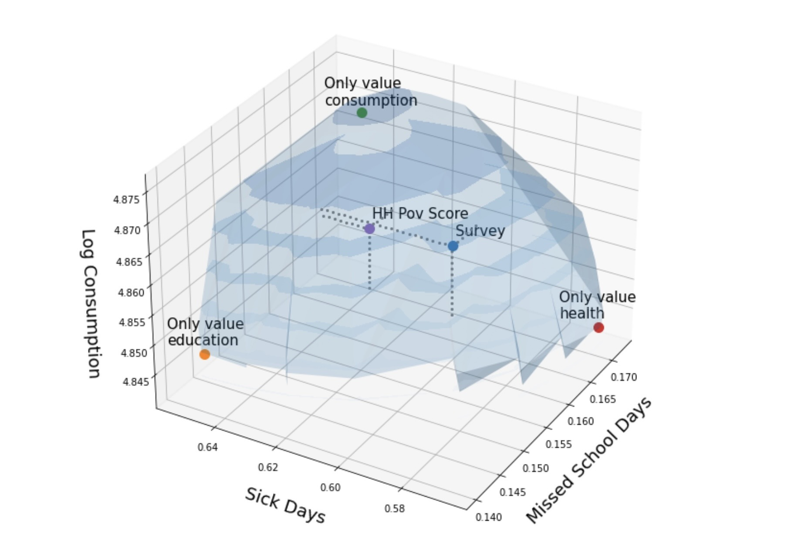

DSAN 5450: Data Ethics and Policy
Spring 2026, Georgetown University
Wednesday, March 25, 2026

In the stu (RStudio), cooken up some 🔥 for yall. Bringing data (.csv files) back into all this econ game theory nonsense
\[ \DeclareMathOperator*{\argmax}{argmax} \DeclareMathOperator*{\argmin}{argmin} \newcommand{\bigexp}[1]{\exp\mkern-4mu\left[ #1 \right]} \newcommand{\bigexpect}[1]{\mathbb{E}\mkern-4mu \left[ #1 \right]} \newcommand{\definedas}{\overset{\small\text{def}}{=}} \newcommand{\definedalign}{\overset{\phantom{\text{defn}}}{=}} \newcommand{\eqeventual}{\overset{\text{eventually}}{=}} \newcommand{\Err}{\text{Err}} \newcommand{\expect}[1]{\mathbb{E}[#1]} \newcommand{\expectsq}[1]{\mathbb{E}^2[#1]} \newcommand{\fw}[1]{\texttt{#1}} \newcommand{\given}{\mid} \newcommand{\green}[1]{\color{green}{#1}} \newcommand{\heads}{\outcome{heads}} \newcommand{\iid}{\overset{\text{\small{iid}}}{\sim}} \newcommand{\lik}{\mathcal{L}} \newcommand{\loglik}{\ell} \DeclareMathOperator*{\maximize}{maximize} \DeclareMathOperator*{\minimize}{minimize} \newcommand{\mle}{\textsf{ML}} \newcommand{\nimplies}{\;\not\!\!\!\!\implies} \newcommand{\orange}[1]{\color{orange}{#1}} \newcommand{\outcome}[1]{\textsf{#1}} \newcommand{\param}[1]{{\color{purple} #1}} \newcommand{\pgsamplespace}{\{\green{1},\green{2},\green{3},\purp{4},\purp{5},\purp{6}\}} \newcommand{\pedge}[2]{\require{enclose}\enclose{circle}{~{#1}~} \rightarrow \; \enclose{circle}{\kern.01em {#2}~\kern.01em}} \newcommand{\pnode}[1]{\require{enclose}\enclose{circle}{\kern.1em {#1} \kern.1em}} \newcommand{\ponode}[1]{\require{enclose}\enclose{box}[background=lightgray]{{#1}}} \newcommand{\pnodesp}[1]{\require{enclose}\enclose{circle}{~{#1}~}} \newcommand{\purp}[1]{\color{purple}{#1}} \newcommand{\sign}{\text{Sign}} \newcommand{\spacecap}{\; \cap \;} \newcommand{\spacewedge}{\; \wedge \;} \newcommand{\tails}{\outcome{tails}} \newcommand{\Var}[1]{\text{Var}[#1]} \newcommand{\bigVar}[1]{\text{Var}\mkern-4mu \left[ #1 \right]} \]
[What is] right, as the world goes, is only in question between equals in power; otherwise, the strong do as they please and the weak suffer what they must. (thucydides2013war? BC) (Think of necessary vs. sufficient conditions!)
| liberalism | republicanism | ||
|---|---|---|---|
| Definition of Injustice | Strong do bad things (Berlin 1959) | Strong can do bad things (Skinner 1998; Pettit 1997; Lovett 2022) | |
| Thucydides Question | Strong do as they please \(\overset{?}{\Rightarrow}\) Strong do bad things |
Strong do as they please \(\overset{?}{\Rightarrow}\) Strong can do bad things |
|
| Answer | No, not necessarily! | Yes, necessarily! | |
| Frederick Douglass | My feelings [towards slave masters] were not the result of any marked cruelty in the treatment I received… | …they sprung from the consideration of my being a slave in the first place. It was slavery—not its mere incidents—that I despised. (Douglass 1855) | |
| A Doll’s House | Our home is nothing but a playroom. I have been your doll-wife, just as at home I was papa’s doll-child; and here the children have been my dolls. (Ibsen 1879) | ||
DSAN 5450 Week 10: Welfare Economics and Policy Evaluation